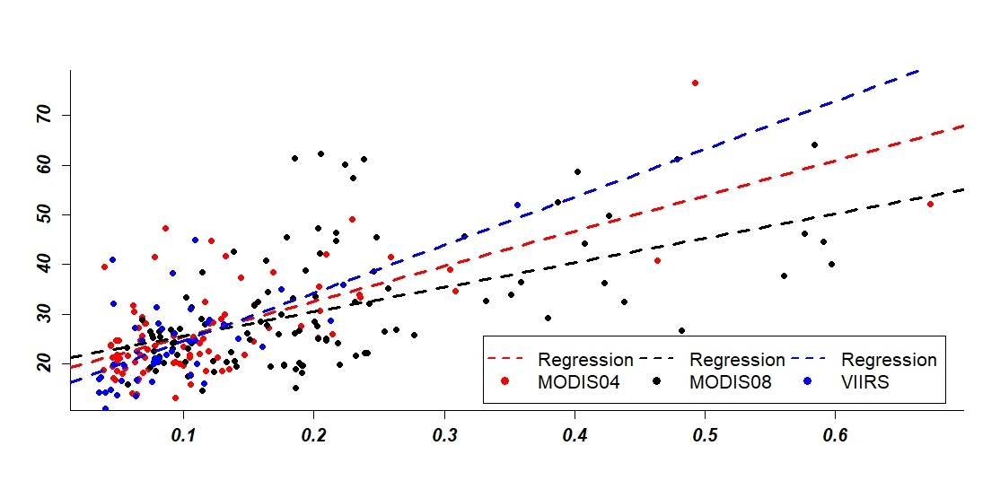
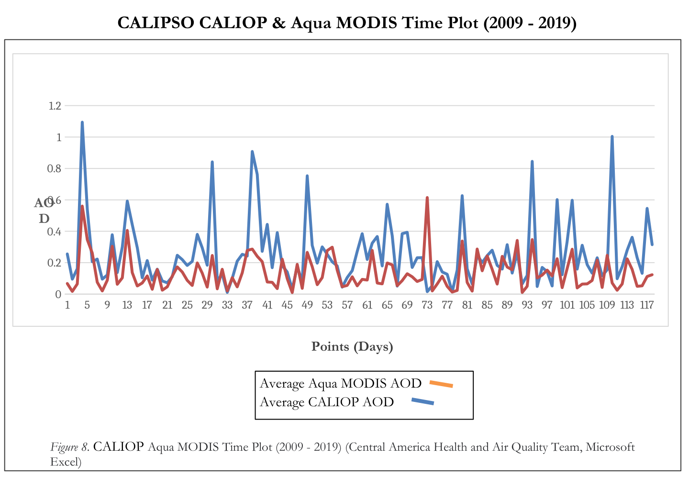

NASA DEVELOP · EL SALVADOR · CENTRAL AMERICA
Air Quality & Public Health
Comparing satellite aerosol optical depth with ground observations to investigate PM2.5.
01Project summaryResearch context
During NASA DEVELOP, I helped prepare Earth-observation data for a regional air-quality analysis. El Salvador was particularly important because in-situ measurements were available for comparison with satellite-derived aerosol observations.
02MethodologyData processing and analysis
I helped develop and automate workflows for acquiring, processing, and extracting NASA Earth-observation products so they could be integrated into ArcGIS Pro. Across the two NASA projects, we worked with more than 900 multidimensional data files using products from systems such as MODIS, VIIRS, GLDAS and Landsat, depending on the analytical need. For the air-quality project, I also contributed to regression modeling in R to compare aerosol optical depth from MODIS and VIIRS with available ground observations in El Salvador, in the context of PM2.5 assessment.
03Figures3 research figures
Three original NASA DEVELOP research figures, including the MODIS04 versus MODIS08 regression from Figure 5 of the final report, displayed from files uploaded to this portfolio. These figures are unmodified scientific results; the decorative project backdrop is separate.



04Results and next stepsFindings and limitations
The team compared satellite aerosol optical depth (AOD) with available in-situ PM2.5 observations. The poster reports overall simple linear regression R² values of 0.3043 for El Salvador (n = 111), 0.09274 for Guatemala (n = 59), and 0.4376 for Panama (n = 35). These are team-level findings, not individual model scores. The team observed elevated AOD and PM2.5 around April and May and identified cloud cover, gaps in ground measurements, and unmodeled meteorological factors as limitations.
Project source materials: Team poster · Final presentation · Final technical report
Additional original research outputs may be added as they become available.